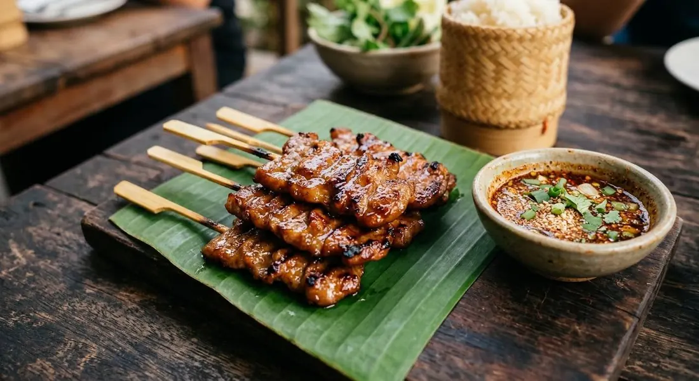

The morning-market skewers: thin pork in a coriander-root and coconut-milk marinade, grilled over charcoal and basted glossy, eaten with sticky rice and the jaew chilli dip.

Before eight in the morning, every Thai town has the same scene: a charcoal grill at the roadside, thin strips of pork threaded onto bamboo, smoke and coconut in the air, and commuters buying them in pairs with a bag of sticky rice. หมูปิ้ง is breakfast — protein on a stick, sweet-savoury from the marinade, carried away in a plastic bag.
The marinade is small but specific. Coriander root pounded with garlic and white pepper is the base note — the root is the part western cooks throw away and Thai cooks build on. Coconut milk softens and sweetens; white soy and palm sugar round it; a drop of sweet dark soy gives the caramel colour. The final trick is the baste: coconut milk flicked over the skewers as they grill, so the surface glazes instead of drying.
The side is น้ำจิ้มแจ่ว — jaew: chilli flakes, fish sauce, tamarind, lime and spring onion. Sour, salty, hot — the sharp cut against the sweet pork. Street stalls in tourist areas sometimes hand over sweet chilli instead; the jaew is the real thing.
| Thai | English | Amount |
|---|---|---|
| The marinade | ||
| สะโพกหมู (สไลด์บาง) | Pork rump, sliced 2 cm wide, 4–5 cm long, 1–3 mm thick | 500 g |
| กระเทียมไทย | Thai garlic | 40 g |
| รากผักชี | Coriander roots | 20 g |
| พริกไทยขาวป่น | Ground white pepper | 6 g |
| ซอสปรุงรสฝาเขียว | Green-cap seasoning sauce | 20 g |
| ซีอิ๊วขาว | White soy sauce | 30 g |
| ซีอิ๊วดำหวาน | Sweet dark soy | 2 g |
| น้ำตาลปี๊บ | Palm sugar | 20 g |
| น้ำตาลทราย | Sugar | 10 g |
| กะทิ | Coconut milk | 70 g |
| กะทิ (เพิ่ม) | Coconut milk, extra — for basting while grilling | as needed |
| ไม้เสียบ (แช่น้ำ) | Bamboo skewers, soaked | as needed |
| The jaew (น้ำจิ้มแจ่ว) | ||
| พริกป่น | Chilli flakes | 30 g |
| น้ำปลา | Fish sauce | 50 g |
| น้ำตาลปี๊บ | Palm sugar | 10 g |
| ผงชูรส | MSG — the source's amount; leave it out if you like | 3 g |
| น้ำมะขามเปียก | Tamarind water | 20 g |
| น้ำมะนาว | Lime juice | 20 g |
| ต้นหอมซอย | Spring onion, sliced | 20 g |
| ข้าวเหนียว | Sticky rice, to serve | as liked |
The cut. Rump (aroifin's shop version) against pork neck (Wongnai's) — the neck is marbled and juicier, the rump slices cleaner. Both grill beautifully.
MSG in the jaew. The aroifin source lists it openly — street jaew has it, and the source says so. Home versions skip it. We've transcribed the source amount and flagged it.
The dip. Jaew is the Isaan standard; tourist-market stalls often serve sweet chilli instead. One is the dish's partner, the other is a shortcut.
Marinade time. Three hours minimum in the shop recipes; home cooks range from thirty minutes to overnight. The longer sit wins.
The baste. Coconut milk (Wongnai, aroifin) against plain oil at some stalls. Coconut is the flavourful choice — the baste is also the last seasoning.
This recipe is translated from the following Thai-language sources. Where they disagree, we've said so.
1. aroifin — "วิธีทำ หมูปิ้งโบราณ ซอสน้ำจิ้มแจ่ว หมักกะทินุ่มฉ่ำ ไม่แห้ง" (shop quantities for the marinade and the jaew) — aroifin.com
2. Wongnai — "วิธีทำ หมูปิ้งกะทิ เมนูหมูสุดฟิน ทำกินได้ ทำขายรวย!" (the pounded coriander-root paste and the coconut baste) — wongnai.com
3. TCC Chaokoh — "หมูปิ้งน้ำจิ้มแจ่ว" (coconut-milk brand recipe, jaew proportions) — tcc-chaokoh.com